FILM PHOTOGRAPHY
A collection of my favourite portraits captured on film
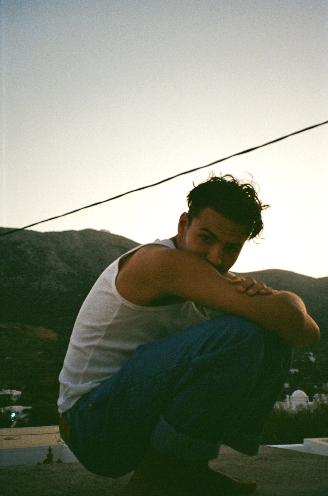
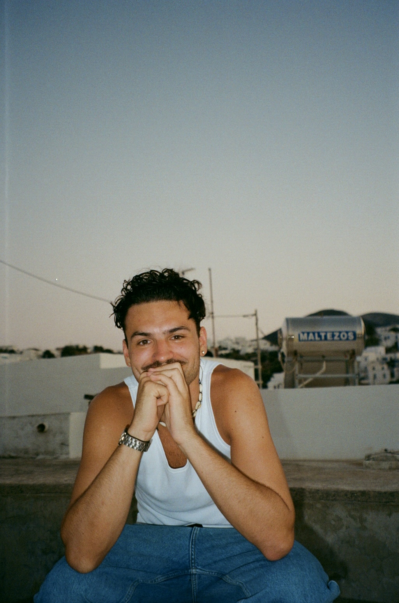
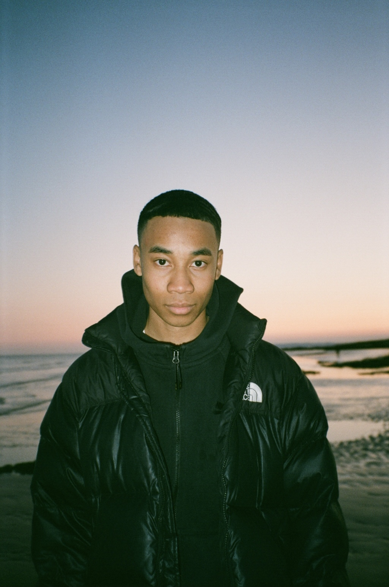
 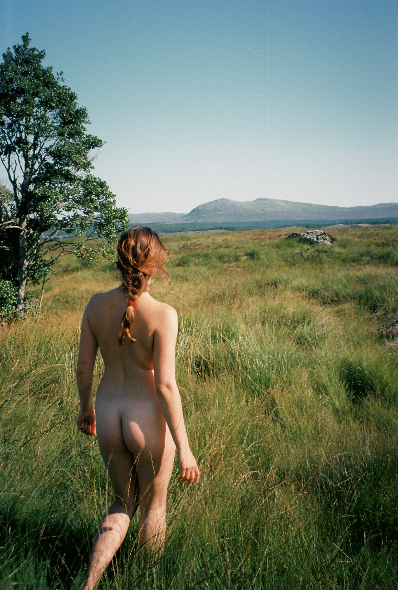
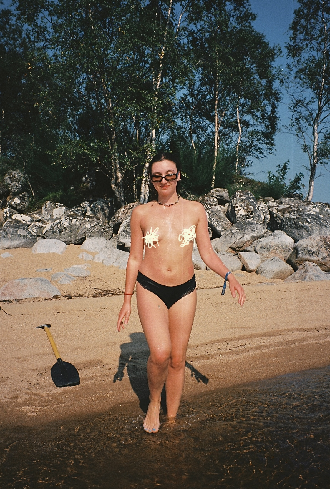
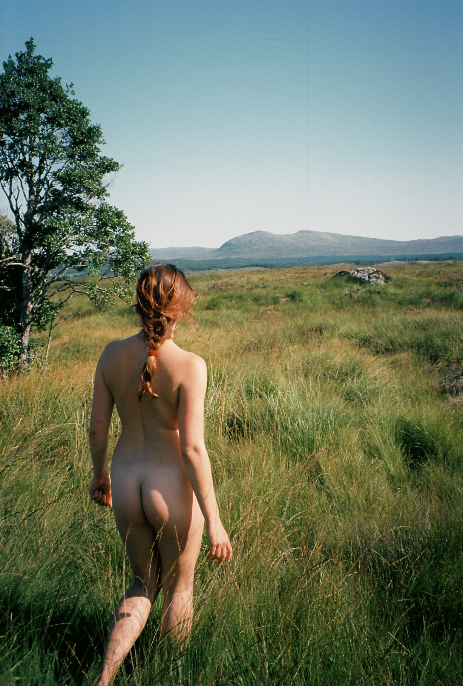
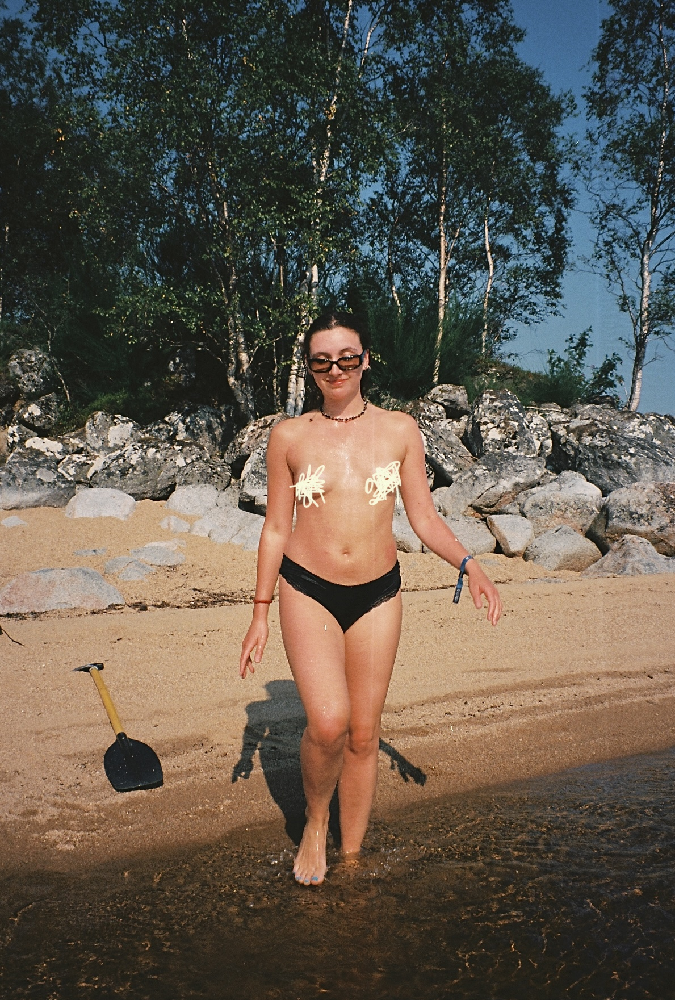
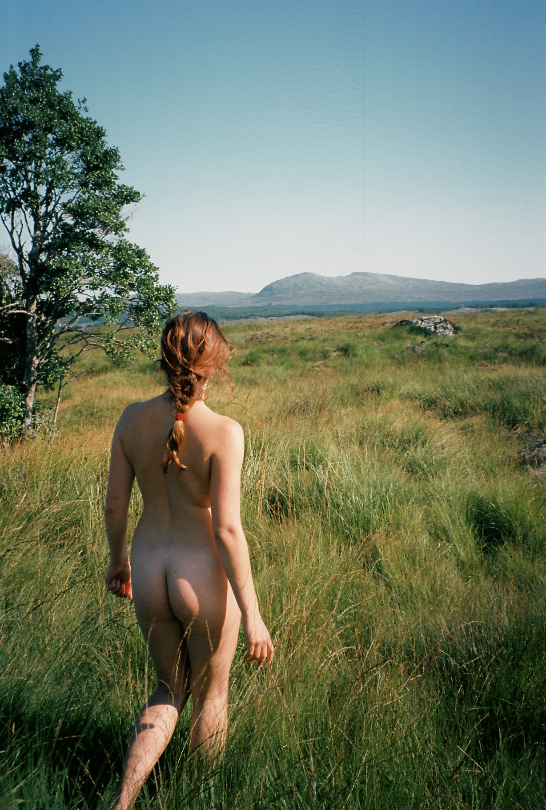
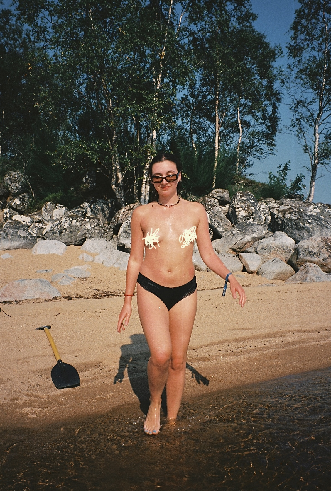
PHOTOGRAPHY PORTFOLIO
As seen in the ACU Review vol 03 issue 01.
What Colour is Nude? is an artistic response to systematic racism and division. Growing up in a predominantly white town made it easy for me to be blind to how unbalanced the world was for people like me. It wasn't until I was older that I realised plasters weren't made with me in mind. In this image, the plaster represents how people of colour are still forgotten in society. Why is it coloured nude? What is the colour nude and why is it only one colour?
This series connects people and places through reflection. Every portrait hides a face yet opens a window to the world that surrounds us and the unseen bonds that link humanity to its landscapes.
A collection of my favourite portraits captured on film
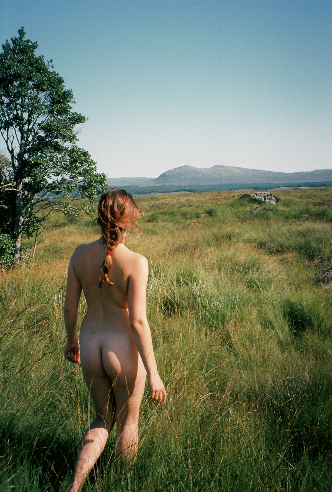
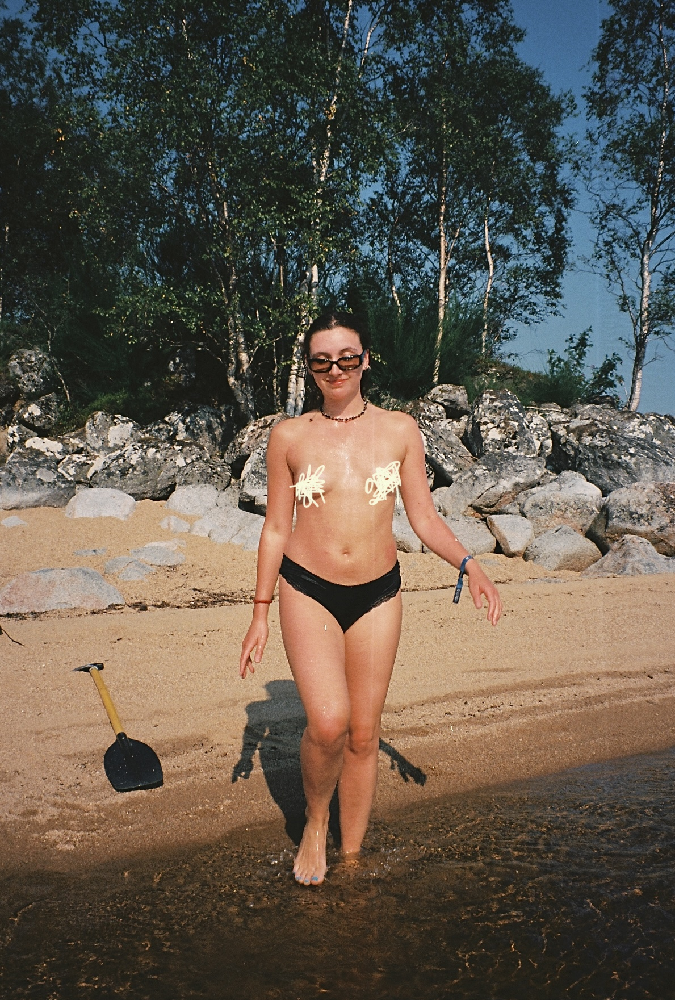